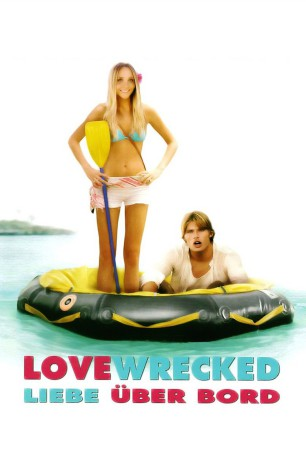

gesehen am 15.11.2016
gesehen am 15.11.2016Alternativ: Lovewrecked (Englischer Titel) gesehen am 15.11.2016
 
 IMDB-Wertung: 4.9 / 10
IMDB-Wertung: 4.9 / 10  Metascore:
Metascore: 
Die 18-jährige Jenny ist völlig aus dem Häuschen, als der von ihr angehimmelte Rockstar Jason als Gast in dem Ferienresort absteigt, in dem sie während des Sommers arbeitet. Damit nicht genug. Amanda und Jason gehen bei einem Bootsausflug über Bord und stranden gemeinsam an einem abgelegenen Strand. Jenny stellt sehr schnell fest, dass ihr abgelegener Strand gar nicht so abgelegen ist, sondern ganz in der Nähe des Resorts liegt; sie behält dies aber für sich, um diese einmalige Gelegenheit für die Eroberung Jason's zu nutzen. Nicht umbedingt einfacher wird Amanda's Vorhaben durch das Auftauchen ihrer Rivalin Alexis, die vorgibt, ebenfalls per Zufalll nach einem Bootsunfall an den Strand gespült worden zu sein.
Jahr: 2005
Dauer: 86 Minuten
FSK: 12
Land: USA Studio: ABC FamilyTonspuren:
Untertitel: Deutsch,
Auflösung: 720p (1280x688) Größe: 3348 MB
Genre: Komödie, Abenteuer, Liebe
Regisseur:  Randal Kleiser
Randal Kleiser
Drehbuch: Andrea Sixt
Soundtrack:
Darsteller:
 Amanda Bynes als Jenny Taylor
Amanda Bynes als Jenny Taylor Jonathan Bennett als Ryan Howell
Jonathan Bennett als Ryan Howell Fred Willard als Ben Taylor
Fred Willard als Ben Taylor Joey Kern als Milo Dinsdale
Joey Kern als Milo Dinsdale Kathy Griffin als Belinda
Kathy Griffin als Belinda Connor Matheus als Otis Venable
Connor Matheus als Otis Venable Brian Peck als TV Reporter #1
Brian Peck als TV Reporter #1Datei: X:\2005(G-M)\Lovewrecked - Liebe über Bord (2005, FSK12, 1280x688).mkv seit 11.07.2016
Festplatte: HD 2005(G-Z)-2006(A-Z)
 Es gibt insgesamt 46 Filme in der Gruppe '2005(G-M)'
Es gibt insgesamt 46 Filme in der Gruppe '2005(G-M)'